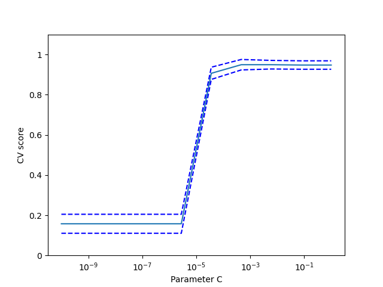

Selección de modelos: elección de estimadores y sus parámetros¶
Puntuación, y puntuaciones validadas de forma cruzada¶
Como hemos visto, cada estimador expone un método de puntuación que puede juzgar la calidad del ajuste (o de la predicción) sobre nuevos datos. Cuanto más grande, mejor.
>>> from sklearn import datasets, svm
>>> X_digits, y_digits = datasets.load_digits(return_X_y=True)
>>> svc = svm.SVC(C=1, kernel='linear')
>>> svc.fit(X_digits[:-100], y_digits[:-100]).score(X_digits[-100:], y_digits[-100:])
0.98
Para obtener una mejor medida de la precisión de la predicción (que podemos utilizar como indicador de la bondad del ajuste del modelo), podemos dividir sucesivamente los datos en pliegues que utilizaremos para el entrenamiento y la prueba:
>>> import numpy as np
>>> X_folds = np.array_split(X_digits, 3)
>>> y_folds = np.array_split(y_digits, 3)
>>> scores = list()
>>> for k in range(3):
... # We use 'list' to copy, in order to 'pop' later on
... X_train = list(X_folds)
... X_test = X_train.pop(k)
... X_train = np.concatenate(X_train)
... y_train = list(y_folds)
... y_test = y_train.pop(k)
... y_train = np.concatenate(y_train)
... scores.append(svc.fit(X_train, y_train).score(X_test, y_test))
>>> print(scores)
[0.934..., 0.956..., 0.939...]
Esto se denomina validación cruzada KFold.
Generadores de validación cruzada¶
Scikit-learn tiene una colección de clases que se pueden utilizar para generar listas de índices de entrenamiento/prueba para estrategias populares de validación cruzada.
Exponen un método split que acepta el conjunto de datos de entrada que se va a dividir y produce los índices del conjunto de entrenamiento/prueba para cada iteración de la estrategia de validación cruzada elegida.
Este ejemplo muestra un ejemplo de uso del método split.
>>> from sklearn.model_selection import KFold, cross_val_score
>>> X = ["a", "a", "a", "b", "b", "c", "c", "c", "c", "c"]
>>> k_fold = KFold(n_splits=5)
>>> for train_indices, test_indices in k_fold.split(X):
... print('Train: %s | test: %s' % (train_indices, test_indices))
Train: [2 3 4 5 6 7 8 9] | test: [0 1]
Train: [0 1 4 5 6 7 8 9] | test: [2 3]
Train: [0 1 2 3 6 7 8 9] | test: [4 5]
Train: [0 1 2 3 4 5 8 9] | test: [6 7]
Train: [0 1 2 3 4 5 6 7] | test: [8 9]
La validación cruzada puede entonces realizarse fácilmente:
>>> [svc.fit(X_digits[train], y_digits[train]).score(X_digits[test], y_digits[test])
... for train, test in k_fold.split(X_digits)]
[0.963..., 0.922..., 0.963..., 0.963..., 0.930...]
La puntuación de validación cruzada puede calcularse directamente utilizando el ayudante cross_val_score. Dado un estimador, el objeto de validación cruzada y el conjunto de datos de entrada, cross_val_score divide los datos repetidamente en un conjunto de entrenamiento y otro de prueba, entrena el estimador utilizando el conjunto de entrenamiento y calcula las puntuaciones basadas en el conjunto de prueba para cada iteración de validación cruzada.
Por defecto se utiliza el método de puntuación del estimador para calcular las puntuaciones individuales.
Consulte el módulo metrics para obtener más información sobre los métodos de puntuación disponibles.
>>> cross_val_score(svc, X_digits, y_digits, cv=k_fold, n_jobs=-1)
array([0.96388889, 0.92222222, 0.9637883 , 0.9637883 , 0.93036212])
n_jobs=-1 significa que el cálculo se enviará a todas las CPUs de la computadora.
Alternativamente, se puede proporcionar el argumento scoring para especificar un método de puntuación alternativo.
>>> cross_val_score(svc, X_digits, y_digits, cv=k_fold, ... scoring='precision_macro') array([0.96578289, 0.92708922, 0.96681476, 0.96362897, 0.93192644])Generadores de validación cruzada
|
|
|
Lo divide en K pliegues, entrena en K-1 y luego prueba en la salida de la izquierda. |
Igual que K-Fold pero preserva la distribución de clases dentro de cada pliegue. |
Garantiza que el mismo grupo no esté en los conjuntos de prueba y de entrenamiento. |
|
||
Genera índices de entrenamiento/prueba basados en una permutación aleatoria. |
Igual que la división aleatoria, pero preserva la distribución de clases dentro de cada iteración. |
Garantiza que el mismo grupo no esté en los conjuntos de prueba y de entrenamiento. |
|
|
|
Toma un arreglo de grupos para agrupar las observaciones. |
Deja fuera a los grupos P. |
Deja de lado una observación. |
|
|
Deja fuera las observaciones P. |
Genera índices de entrenamiento/prueba basados en divisiones predefinidas. |
Ejercicio
En el conjunto de datos de los dígitos, trace la puntuación de validación cruzada de un estimador SVC con un núcleo lineal como función del parámetro C (utilice una cuadrícula logarítmica de puntos, de 1 a 10).
import numpy as np from sklearn.model_selection import cross_val_score from sklearn import datasets, svm X, y = datasets.load_digits(return_X_y=True) svc = svm.SVC(kernel='linear') C_s = np.logspace(-10, 0, 10) scores = list()
Solución: Ejercicio de validación cruzada en el conjunto de datos Digits
Búsqueda en cuadrícula y estimadores de validación cruzada¶
Búsqueda en cuadrícula¶
scikit-learn proporciona un objeto que, dados los datos, calcula la puntuación durante el ajuste de un estimador en una cuadrícula de parámetros y elige los parámetros para maximizar la puntuación de validación cruzada. Este objeto toma un estimador durante la construcción y expone una API de estimadores:
>>> from sklearn.model_selection import GridSearchCV, cross_val_score
>>> Cs = np.logspace(-6, -1, 10)
>>> clf = GridSearchCV(estimator=svc, param_grid=dict(C=Cs),
... n_jobs=-1)
>>> clf.fit(X_digits[:1000], y_digits[:1000])
GridSearchCV(cv=None,...
>>> clf.best_score_
0.925...
>>> clf.best_estimator_.C
0.0077...
>>> # Prediction performance on test set is not as good as on train set
>>> clf.score(X_digits[1000:], y_digits[1000:])
0.943...
Por defecto, GridSearchCV utiliza una validación cruzada de 5 pliegues (folds). Sin embargo, si detecta que se pasa un clasificador, en lugar de un regresor, utiliza una de 5 pliegues estratificada.
Validación cruzada anidada
>>> cross_val_score(clf, X_digits, y_digits)
array([0.938..., 0.963..., 0.944...])
Se realizan dos bucles de validación cruzada en paralelo: uno por el estimador GridSearchCV para establecer gamma y el otro por cross_val_score para medir el rendimiento de la predicción del estimador. Las puntuaciones resultantes son estimaciones insesgadas de la puntuación de la predicción en los nuevos datos.
Advertencia
No se pueden anidar objetos con computación paralela (n_jobs diferente a 1).
Estimadores con validación cruzada¶
La validación cruzada para establecer un parámetro se puede hacer de manera más eficiente sobre una base de algoritmo por algoritmo. Por eso, para ciertos estimadores, scikit-learn expone estimadores Validación cruzada: evaluación del rendimiento del estimador que establecen su parámetro automáticamente por validación cruzada:
>>> from sklearn import linear_model, datasets
>>> lasso = linear_model.LassoCV()
>>> X_diabetes, y_diabetes = datasets.load_diabetes(return_X_y=True)
>>> lasso.fit(X_diabetes, y_diabetes)
LassoCV()
>>> # The estimator chose automatically its lambda:
>>> lasso.alpha_
0.00375...
Estos estimadores se denominan de forma similar a sus homólogos, añadiendo «CV» a su nombre.
Ejercicio
En el conjunto de datos de la diabetes, encuentre el parámetro óptimo de regularización alfa.
Bonus: ¿Cuánto puedes confiar en la selección de alfa?
from sklearn import datasets
from sklearn.linear_model import LassoCV
from sklearn.linear_model import Lasso
from sklearn.model_selection import KFold
from sklearn.model_selection import GridSearchCV
X, y = datasets.load_diabetes(return_X_y=True)
X = X[:150]
Solution: Ejercicio de validación cruzada sobre el conjunto de datos de la diabetes